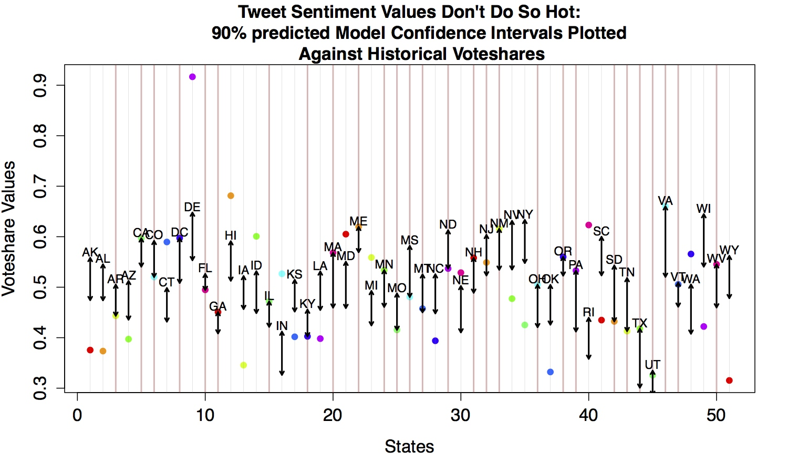
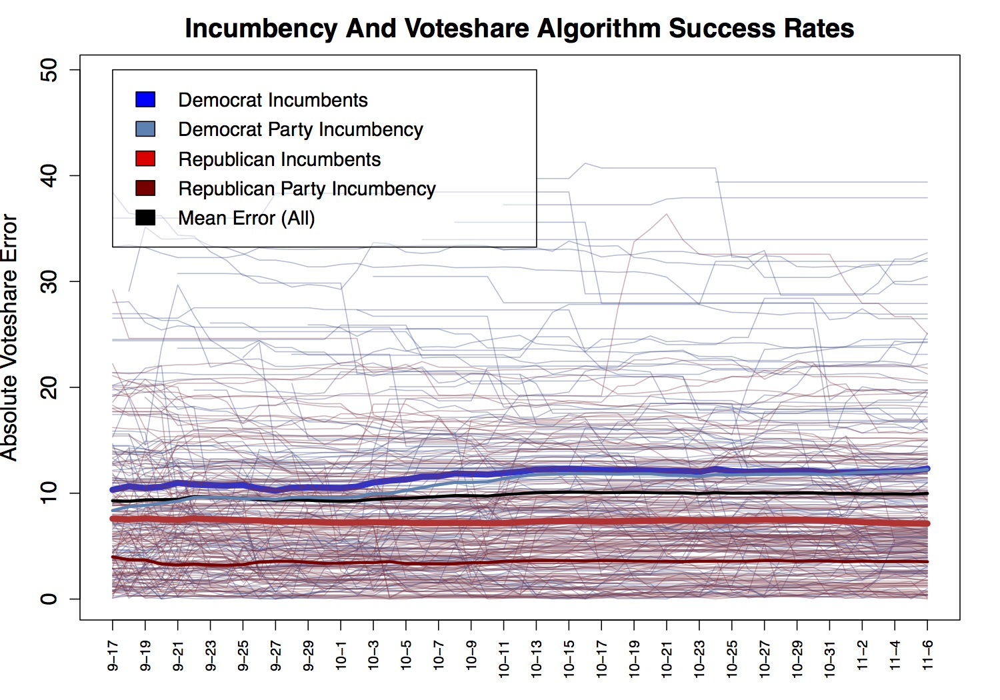
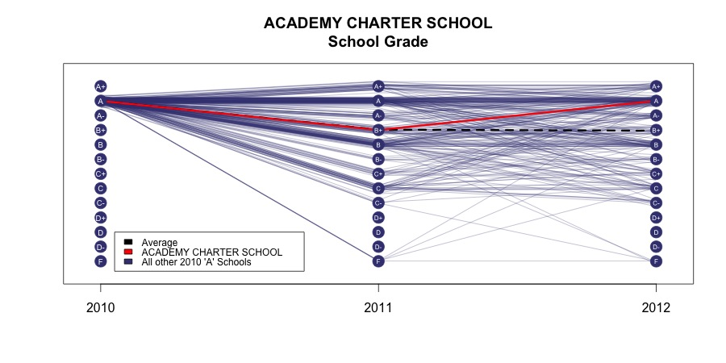

I made this graph for a class in which I used tweets to predict the 2012 presidential election. It was a very entertaining laugh. I created a forecasting model which predicts state-level vote-share probabilities by using a hierarchical Bayesian model to incorporate the simple text analysis of state-specific tweets into predictions. The model used Markov chain Monte Carlo methods to develop the final posterior distribution. Model priors were based off of state-level 2004 and 2008 vote-share data. Data consisted of recent tweets mentioning 'Obama' or 'Romney'. Although the simple text analysis of tweets is not a perfect substitute for polling data (problems will be discussed below), it offers a potential way to bolster political forecasting models. This is one of the graphs I used in the paper I wrote: Using Tweets and Bayesian Statistical Analysis to Model the 2012 Presidential Election.

This is one of the graphs made to inspect the success of the algorithm our twitter project used to predict congressional elections with. This particular graph looked at algorithm success for incumbent candidates.

This is an example of a function I wrote to visualize the progress of any school in Colorado over the past three years. The program allows users to compare a chosen school to any combination of the following: 1) all other schools in Colorado, 2) all other schools in the selected school's own district, 3) all other schools whose evaluation grade in the starting year, 2010, was the same as the selected school's, and 4) the type of evaluation grade (science, writing, math, reading, or overall).